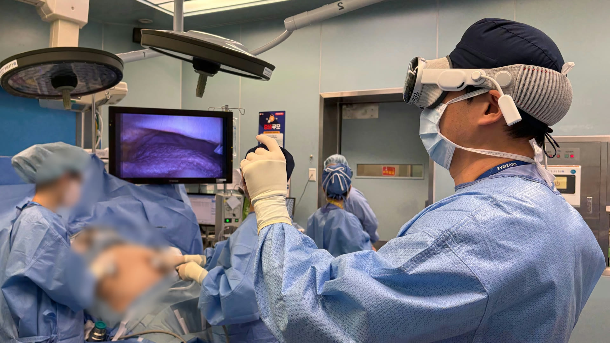

APPLE VISION PRO · DEVELOPMENT NOTES
Endoscopic video.
3D models.
Our start on Vision Pro.
HIPPO began at Apple Developer Academy in 2025 with a simple idea: bring endoscopic video and 3D models into the same view. That work continues in Surgical XR.

MAC → APPLE VISION PRO
From the Mac
to the headset.
The Mac captures the endoscopic video and sends it to Vision Pro. This recording shows the video window inside the headset alongside the Mac running the stream.
- Endoscopic videoVideo output
- MacCapture and stream
- Apple Vision ProDisplay
3D MODELS
A model to explore
with the video in view.
A prepared 3D liver model can be opened and repositioned. These clips show us trying out its placement and orientation while keeping the endoscopic video in view.
Open a 3D model
Select a liver model from the list and bring it into view.
Endoscopic video & 3D models
Move and rotate the model with the endoscopic video in view. Adjust each layer’s opacity and choose which layers to show.
FROM HIPPO TO SURGICAL XR
Continuing in the operating room.
Since HIPPO, development has expanded to different endoscopy systems and Galaxy XR. The connection notes document that work; the roadmap sets out what comes next.
← Development history